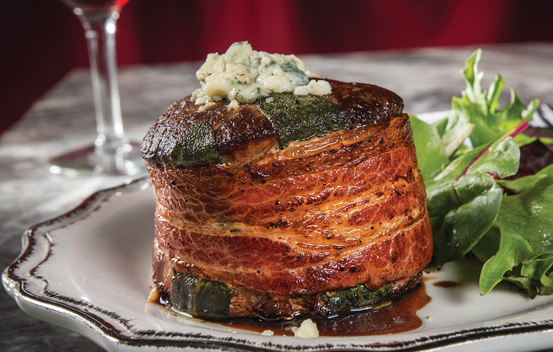

Recipe: Bacon Wrapped Bleu Cheese Filet

Other Recipes:
Ingredients:
- 8 ounce filet
- 2 strips thick cut bacon
- 3 tbsp bleu cheese crumbles
- 2 tbsp butter
- 1 tbsp salt/1 tsp pepper
Preparation:
- Thoroughly coat filet with 1 tbsp butter, salt, and pepper.
- Place second tbsp of butter in a frying pan until it heats up.
- Sear one side of filet for 3-3.5 minutes.
- Flip filet and sear other side for same amount of time.
- Pre cook bacon strips in a frying pan, but only for half of the time so it is still half raw.
- Carefully wrap filet in two strips of bacon, it should adhere easily if the bacon is not cooked fully.
- Place bleu cheese crumbles on top of filet.
- Place wrapped/topped/seared filet on a non stick oven tray and put in oven on 350 degrees for 8 min for
medium rare, 9-11 min for medium, and if you do more than that you might as
well just make a cheeseburger.